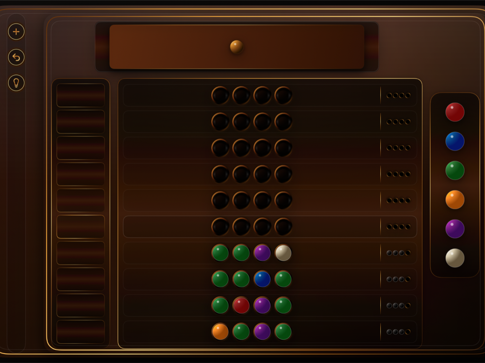
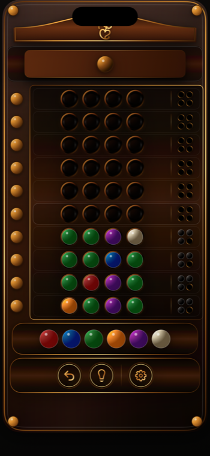
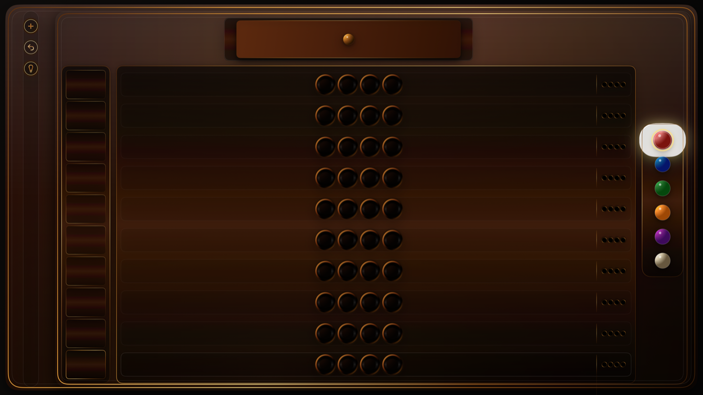

Think In Color
Pick four color pegs, compare feedback pins, and narrow the hidden code with each row.
Classic logic game
A refined code-breaking puzzle with a high-polished wood board, brass details, carved peg holes, and clean Apple-device controls.

Codebreaker Classic is a refined deduction game inspired by timeless peg-and-pin logic boards. Choose a sequence of colors, read the black and white feedback pins, and solve the hidden code before your final row.
The paid edition is ad-free and designed for iPhone, iPad, Mac, Apple TV, and Apple Vision Pro. The free iOS edition includes advertising support.
Pick four color pegs, compare feedback pins, and narrow the hidden code with each row.
Black pins mark exact matches. White pins mark correct colors placed in the wrong spot.
The interface uses dark polished wood, brass trim, and carved holes for a premium tabletop feel.

